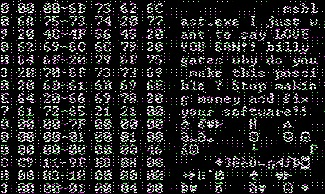
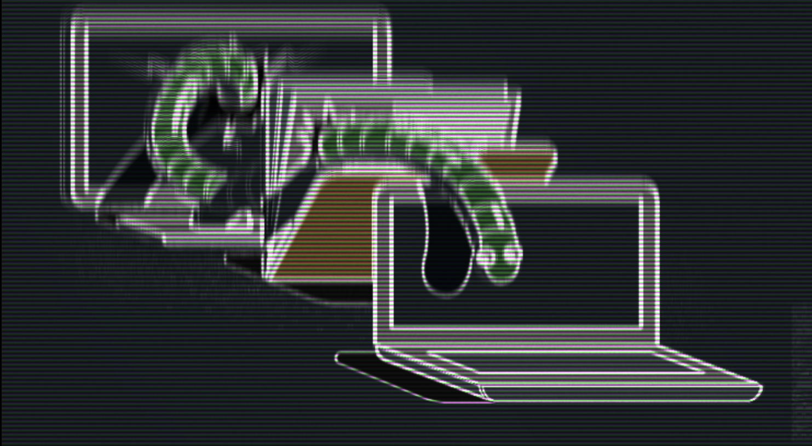

Computer Worm
A computer worm is a type of virus that is able to
replicate itself without interaction from the host. They frequently do
this to infect other computers. This is done by spreading itself through computer
networks. They are considered standalone software, not requiring
another piece of software to cause damage. However, intial infection is usually
aided by social engineering. |
 |
|---|
What Can a Worm Do?Being a standalone software a Worm is largely capable anything the author can program. Among the most common features are:
Install a BackdoorA worm can install a backdoor to a computer or piece of software, allowing unauthorized access and modfication of the computer and/or specific software.
Steal DataA worm can harvest the users key-log strokes, record their screen and built-in camera, read files and send this information to the operator of the worm.
Intefere with NetworksDue to the nature of the way Worms propogate, their replication alone can cause enough inteference with a network. However they may also additionally be geared towards disrupting a host's network or using the host to target another network.
Deploy Additional SoftwareA worm has the capability to install in addition to itself software such as a ransomware or spyware. |
 |
|---|
How Does a Worm Spread?
External DevicesA worm can gain physical persistence and continue to replicate every time a storage medium is connected to a device. It may potentially infect a host, use the host to infect another machine to which a storage medium is attached. It may then copy itself to that second external medium.
PhishingOne of the most frequent ways in which worms spread is though e-mail. They can come disguised as Word documents containing executable macros or other files masquerading as executables. They can also be links in e-mails which redirect to domains that install the worm.NetworksWorms are known to propogate themselves across networks, infecting hosts that subsequently infect more hosts over a network. |
|---|
The First Worm
The first actively distributed Worm is considered the Morris Worm. The Morris Worm was created by graduate student Robert Morris out of curiosity. The worm was released on the MIT network on November 2nd 1988. The worm exploited an error in the Unix sendmail program, a buffer overflow in the fingerd network service and the fact that many remote shells during that time had no password requirements. While the worm worm was not intended to cause damage, the author of it did not forsee a certain development of its release. Due to the fact that it turned out to be much more infectious than anticipated it started to reinfect hosts repeatedly until they crashed due to lack of memory. In addition the constant reinfection replicated a modern DDOS attack. |
|---|
Mydoom
Mydoom is considered the most infectious computer worm to date. It was first identified in January of 2004. It spread only by e-mail. The first test versions of the e-mails contained the message "andy; I'm just doing my job, nothing personal, sorry", sent from Russia. Subsequent versions found in the wild had a malicious attachment and would disguise themselves as an error message, typically an e-mail send failure. The worm would subsequently go through the infected host's contact book and send similar e-mails to them. While intiailly thought to be a piece of software comissioned for use by e-mail spammers, the two origina payloads lend credence that it may have a different purpose. The original version of the worm contained two payloads. The first was a backdoor that allowed
remote control of the computer. The second was a piece of code whose purpose was to denial-of-service attack an American
software company called SCO Group. This component was programmed to attack the sco.com website on the 1st of February. The attack is a failure
due to SCO taking precautions to avert the attack. Future versions included other features including a component meant to attack microsoft.com. While
this attack is successfully executed it has minimal effect on the site. Relatively soon after the worm is programmed to stop spreading, going into oblivion.
Despite significant research into the origin of the worm and large bounties
offered to anyone able to identify the author, the author remains anonymous to this day. |  |
|---|
Computer Worm |
Philip Krause |
|
|---|